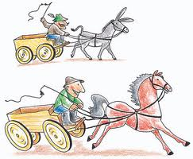

Newton I.törvényéből következik, hogyha egy testre nem hat erő, akkor az nem változtatja meg mozgásállapotát.
Egy kiskocsi és a hozzá erősített csigán átvetett
kötélen függő nehezékek segítségével kísérletileg megvizsgálhatjuk,
hogyan változik egy test mozgásállapota, ha erő hat rá. Mivel a mozgásállapot megváltozása az időegységre eső sebességváltozással, a gyorsulással jellemezhető
Newton II.törvénye:
Egy test gyorsulása egyenesen arányos a testre ható erővel.
|

|